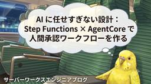

サーバーワークスエンジニアブログ
https://blog.serverworks.co.jp/
クラウド専業インテグレーター・サーバーワークスの中の人があらゆる技術についてお届けします。
フィード

【AWS Summit Japan 2026】雑感レポート
サーバーワークスエンジニアブログ
こんにちは。マネージドサービス部のこまちです。 2026年6月25日、AWS Summit Japanに現地参加してきました。 ここ数年は参加していますが、今年の盛況ぶりは例年を大きく上回るものだったように感じました。 午前中に会場に向かいましたが、入場するまでに長蛇の列ができ入場するまでに40分ほどかかったのは驚きでした。 若干投下するタイミングが遅れたような気がしつつも、会場を歩き回りながら5つのセッションを聴講したので、簡単にレポートします。 聴講したセッション [PRT220-S] 【デモで実演】新時代に迫る脅威！ ─ 生成 AI への脅威事例と AI Security について ─（…
13時間前

【AWS Summit Japan 2026 セッションレポート】140,000 サーバー・900PB のリージョン移行: Amazon 最大規模の事例に学ぶ実践知
サーバーワークスエンジニアブログ
はじめに マルチリージョン化のポイント IaCによるシステム管理 ハードコードの解消 AIによるコード変換 DBの整合性設計の見直し まとめ 最後に はじめに システムのマルチリージョン化により、リージョン障害時のサービス停止リスクの低減と、ユーザーに近い場所からサービスを提供することによるレイテンシーの改善を図ることができます。特に大規模なシステムではマルチリージョン化を検討するケースは多いと思いますが、どのように進めていくべきか頭を悩まされる方は多いのではないでしょうか。 AWS Summit Japan 2026のセッション「140,000 サーバー・900PB のリージョン移行: Am…
15時間前

【AWS Control Tower】「CfCTによる意図せぬ変更」のリスクに注意しよう
サーバーワークスエンジニアブログ
サムネイル はじめに こんにちは。CC2課の古屋です。 私の住む山梨では、梅雨入りすると盆地特有の一層蒸し暑い季節がやってきますよ。 さて、皆様はAWS Control Towerのマルチアカウント環境をコードで一元管理できるソリューション、CfCT（Customizations for AWS Control Tower）をご存じでしょうか。 「初めて聞いた」「構築方法を知りたい」という方は、ぜひ事前に弊社の過去ブログをご覧ください。 AWS Control Towerのカスタマイズソリューション(CfCT) - サーバーワークスエンジニアブログ CfCTは複数アカウントのガバナンスを自動化…
17時間前

Claude Codeのdesign-syncで、コードとデザインを双方向に同期してみた
サーバーワークスエンジニアブログ
目次 はじめに 概要 検証用アプリの準備 ローカルからClaudeDesignへの同期 ClaudeDesignで修正 ClaudeDesignからローカルへの同期 所感 まとめ はじめに こんにちは、佐々木です。 2026/6/17にClaude Codeがアップデートされ、/design-syncコマンドでClaude Designのデザインシステムとコードベースを同期できるようになりました。 自分で作成したWebアプリも、Claude Design上でデザインを編集できると便利だと思い、試してみました。 しかし実際にやってみると、Claude Design側で編集した内容をコードに反映す…
1日前

「Claude Certified Architect – Foundations」受験ガイド最新版 ― Pearson VUE移行で何が変わった？（2026年7月時点）
サーバーワークスエンジニアブログ
はじめに CCA-Fとは 2026年6月30日の主な変更点 受験の流れ 受験にあたっての注意事項 まとめ 参考リンク はじめに Claude Certified Architect – Foundations（以下、CCA-F）は、Claude API・Claude Agent SDK・Claude Code・MCP（Model Context Protocol）を使った実運用システムの設計スキルを問う認定資格です。 2026年6月30日付で受験プラットフォームがPearson VUEに移行し、受験料や再受験ルールなど複数の制度変更がありました。これから受験を検討している方向けに、最新の公式情…
1日前
エージェント不要でネットワーク機器のログをCloudWatchに集約 - Amazon CloudWatch Logs マネージドsyslogインジェストを試してみた
サーバーワークスエンジニアブログ
Amazon CloudWatch Logsがsyslogプロトコルによる直接受信に対応したことによるアップデート概要や設定方法、注意点など、従来方式との比較から、マネジメントコンソールを使った5ステップの設定手順、運用上の注意点まで解説します。
2日前

Claude Sonnet 5 リリース！Opus 4.8に迫る性能をSonnet価格据え置き
サーバーワークスエンジニアブログ
はじめに サーバーワークスの池田です。 2026年6月30日、Anthropic が Claude Sonnet シリーズの最新版 Claude Sonnet 5 をリリースしました。前モデルの Sonnet 4.6 からの世代更新で、コーディングとエージェント的タスクを中心に大幅な性能向上が図られています。 本記事では、Anthropic の公式発表と Platform ドキュメントをもとに、Sonnet 5 が「モデルとして何が変わったのか」を読み解きます。ベンチマーク数値の伸び、Opus 4.8 との価格・性能のポジショニング、そして API を移行する際に注意すべき挙動変更までをまとめ…
2日前
aws_s3 拡張 AuroraからS3へのエクスポート【基本編】
サーバーワークスエンジニアブログ
はじめに こんにちは、サメ映画をこよなく愛する梅木です。某家具店のサメのぬいぐるみを購入し毎日のように癒されています。 今回のブログでは、Aurora に格納されているデータをSQL文を利用して S3バケットに出力する機能である aws_s3 拡張 S3Export 機能を紹介します。 本記事では、基本編として デフォルト暗号化（SSE-S3）のS3バケットへのエクスポート の動作検証をゴールとして、必要なAWSリソースと構築手順を記載します。 実践編では、SSE-KMS暗号化されたS3バケットへのエクスポートという実際の本番ワークロードに近い構成での構築手順を解説します。 はじめに aws_…
3日前

【AWS Summit Japan 2026】ゲームチャットを支える技術 [CDN221] セッションレポート
サーバーワークスエンジニアブログ
はじめに Nintendo Switch 2 のゲームチャットとは システム構成 WebRTC + SFU アーキテクチャ マルチリージョン運用 なぜマルチリージョンなのか 選択的なマルチリージョン設計 IaC（Terraform）による効率的なインフラ管理 DynamoDB での開発手法 コスト効率を意識したテーブル設計 感想 まとめ はじめに こんにちは。新人のいなみです。 先日開催された AWS Summit Japan 2026 に参加してきました。 数あるセッションの中で特に気になったのが、「ゲームチャットを支える技術」です。 タイトル 私自身、前職ではゲーム業界に携わっていたことも…
3日前

AWS Summit 2026 に行ってきたよ！ブースで見た話題のフロンティアエージェントについて
サーバーワークスエンジニアブログ
AWS Summit に参加してきました。会場はAI一色で、中でも「運用 × AI」の注目度の高さが印象的でした。この記事ではブースで聞いた話をもとに、AWSが提唱するフロンティアエージェント（DevOps Agent / Security Agent / Kiro）の役割とできることを初学者にもわかりやすく整理しています。S3ログ調査の具体的な設定方法や、KiroとSecurity Agentの連携による開発体験の変化など、実際に使う際のポイントも交えてまとめました。
3日前

Claude Code更新 MCP認証コマンド・bash自動応答【6/22〜28】
サーバーワークスエンジニアブログ
はじめに サーバーワークスの池田です。 今週（6/22〜6/28）の Claude Code は v2.1.186 から v2.1.195 まで6バージョンがリリースされました（v2.1.188・189・192・194 はスキップ）。派手な新機能は少なく、SSH や CI、auto mode の透明性といった現場の痛点を潰す改善が中心の週です。 中でも、MCP サーバーの認証をターミナルだけで完結できる新コマンドと、bash モードの使い勝手の向上が目立ちます。 この記事で分かること ブラウザを開かずに MCP サーバーを OAuth 認証できる claude mcp login / logo…
4日前

AWS Transform continuous modernization プレビュー公開！ ── Lambda ランタイム EOL 対応はどこまで自動化できるのか試してみました
サーバーワークスエンジニアブログ
AWS Transform continuous modernizationは複数リポジトリに対する技術的負債の検出と修正案作成を支援する機能です。今回の検証では、Lambdaランタイム更新とSDK移行を試してみました。
4日前

Mac で GitHub MCP Server を Docker で動かす設定ガイド（Claude Code / Kiro CLI）
サーバーワークスエンジニアブログ
こんにちは。 アプリケーションサービス本部、DevOps担当の兼安です。 本記事はMac 上で AI コーディングツールから GitHub を操作できる GitHub MCP Server を、 Docker コンテナ経由で Claude Code や Kiro CLI に接続する方法をまとめています。 本記事の検証環境 なぜ GitHub MCP Server を Docker コンテナで動かすのか Docker イメージでの実行が公式の推奨方法 GitHub Copilot の場合は Docker 不要 Mac におけるコンテナ動作基盤：Colima Docker Desktop を避ける…
4日前
【AWS Summit Japan 2026】イベント参加レポート
サーバーワークスエンジニアブログ
こんにちは、マネージドサービス部の加藤です。 今年も AWS Summit Japan 2026 に参加してきました。本記事では私が参加した2つのセッションをレポートします。 今年も雨が降る天気となっていましたが、会場は大賑わいでした。 注記：本記事の内容はセッションの公式見解ではなく、筆者の理解・解釈・感想を含みます。正確な情報は各セッションの公式資料をご参照ください。 AWS Summit Japan 2026会場 目次 セッション1：生成 AI × MCP で切り拓く次世代 SRE！ 要約 感想 セッション2：ランサムウェア被害を想定した迅速な復旧のためのバックアップ 要約 感想 さいご…
4日前
AWS Summit Japan 2026 の Builder Community Lounge でチョークトークをしてきました 3
3
サーバーワークスエンジニアブログ
AWS Summit Japan 2026 の Builder Community Lounge でチョークトークに登壇しました。アクセスキーの不正利用対策をテーマに、流出経路や脱却できない理由、多層防御の重要性について参加者とディスカッションした内容の振り返りと、私個人として得た学びをまとめました。
4日前
Prowler を使ってアカウントのセキュリティ状態についてチェックしてみた。
サーバーワークスエンジニアブログ
今回は、OSS のクラウドセキュリティツール Prowler を使って AWS アカウントのセキュリティスキャンを試してみました。 「自分のアカウントのセキュリティ設定、大丈夫かな？」と気になったことがある方の参考になれば幸いです。 Prowler とは Prowler は AWS、Azure、GCP、Kubernetes に対応した OSS のセキュリティスキャンツールです。 CSPM（Cloud Security Posture Management）に分類されるツールで、CIS Benchmark や PCI-DSS、GDPR などのコンプライアンスフレームワークに基づいたチェックを実行…
5日前
【AWS Summit Japan 2026】AI-DLCについての話をセッション横断でまとめてみました
サーバーワークスエンジニアブログ
AWS Summit Japan 2026でAI-DLCが複数のセッションで取り上げられていました。各セッションの話につながりがあるように見受けられたので一つの話の流れにまとめてみました。
5日前

【AWS Summit Japan 2026】体験型ブースで見たAIエージェントの今 ─ 4つの展示レポート
サーバーワークスエンジニアブログ
はじめに 今月誕生日の人、おめでとうございます🎉 エデュケーショナルサービス課の森純子です。 AWS Summit Japan 2026のセッションレポート第3弾です。今回はセッションではなく、会場内の体験型展示ブースで体験した内容をレポートします。 どの展示も裏側でAIエージェントが自律的に動いていることが共通していて、「エージェント時代」を肌で体感する体験でした。AWSの方に声をかけて説明を受けると資料リンクをもらえる仕組みだったので、気になるブースには積極的に話しかけに行きました。 本記事では、特に印象に残った4つの展示を紹介します。 ※楽しすぎて説明に集中してしまい、写真を撮り忘れた展…
6日前

【AWS Summit Japan 2026】AI エージェント時代における責任あるAIのベストプラクティスと実践例 [AIM345] セッションレポート
サーバーワークスエンジニアブログ
はじめに 今月誕生日の人、おめでとうございます🎉 エデュケーショナルサービス課の森純子です。 AWS Summit Japan 2026のセッションレポート第2弾です。 AIエージェントの自律性が上がるほど、インシデント時のインパクトも大きくなります。このセッションで印象に残ったのは、責任あるAIは「ガードレール→監視→組織的改善」のサイクルを回し続けることが本質だということ。そしてIndeed様の実践事例「Anticipate→Guardrail→Observe」のフレームワークが具体的で参考になりました。 構成が非常に分かりやすく、Responsible AIにこれから取り組む方にもおすす…
6日前

【AWS Summit Japan 2026】AI 駆動カオスエンジニアリングのすすめ [DVT452] セッションレポート
サーバーワークスエンジニアブログ
はじめに 今月誕生日の人、おめでとうございます🎉 エデュケーショナルサービス課の森純子です。 AWS Summit Japan 2026に行ってきました！ 会場は凄い盛況で、人・人・人！ 終始会場全体の熱気がすごく、近年のAWSへの注目度の高さをまじまじと感じました。基調講演やスペシャルセッションのオープニングのDJパフォーマンスもとってもかっこよかったです。 今回の私の参加目的は、AI時代の開発の「今」を現場レベルで知ることでした。ベストプラクティスはドキュメントで読めますが、実際に今どう使われていて、どこまで進んでいるのか。私は運用面ではAIを日常的に活用していましたが、アプリ開発は初心者…
6日前

AgentCore Policy に来た Guardrails を IAM 認証ゲートウェイで動かす（プロンプトインジェクションをゲートウェイで止める）
サーバーワークスエンジニアブログ
はじめに 今回の結論（先に3行で） Guardrails とは — 目的・背景と Cedar Policy との違い 背景（おさらい） Cedar Policy と Guardrails は「守るレイヤー」が違う 具体的にどんな指示を止めるのか guardrail に定義する中身（指定する4つの要素） 概要図: 同じ境界で「認可」→「コンテンツ安全」の二段 検証環境 Guardrails の前提（運用面） 作成するポリシーと解説 スコープ（forbid の括弧内） guardrail 条件（when guardrails の中身） ["PROMPT_INJECTION"] が 2 回出てくる理…
6日前

【AWS Summit Japan 2026】AI ネイティブで実現する、妥協なき顧客体験 - Amazon Connect Customer [BIZ201] セッションレポート
サーバーワークスエンジニアブログ
AWSが提案する顧客体験の再設計。AIを用いたプロアクティブなアクションで、効率的かつパーソナライズされた顧客サポートの未来を描きます。
6日前

【AWS Summit Japan 2026】ごった煮イベントレポート
サーバーワークスエンジニアブログ
こんにちは、マネージドサービス部の大城です。 今年も AWS Summit Japan 2026 に参加してきました。今年は1記事にまとめてイベントレポートを書きます。 Day1（6/25） 沖縄 -> 羽田 -> 幕張 会場到着 Day1セッション 生成 AI × MCP で切り拓く次世代 SRE！自律型運用への挑戦と開発者体験の進化（PRT216-S / sponsored by New Relic） 要約 感想 Day2（6/26） Day2セッション 「勝手に広まる」人気 AI エージェントを爆速で作ろう！（DEV250） 要約 感想 AI 時代の IT 基盤を支えるキンドリルの実践知…
6日前

【AWS Summit Japan 2026】ブースレポート
サーバーワークスエンジニアブログ
「AI が DJ も VJ もやってみた♩」ブース Serverlesspresso NVIDIA Jetson AGX Orin を使った安全確認研修 AI 営業ロールプレイ まとめ こんにちは😺 アプリケーションサービス部の山本です。 中途入社社員向けのトレーニングを担当しています。 先日、AWS Summit Japan 2026 に参加してきました！ 6/26 のセッションについては、別記事でレポートを 2 本書いています。 blog.serverworks.co.jp blog.serverworks.co.jp 本記事では、会場で回ったブースについて、ゆる〜くレポートしていきます！…
6日前

【AWS Summit Japan 2026】Apache Iceberg on AWS 実践ガイド [ANT355] セッションレポート 1
サーバーワークスエンジニアブログ
セッション概要 第1章 なぜ今 Apache Iceberg なのか AI の基盤であるデータ Agentic AI におけるデータの障壁 Apache Iceberg というオープンテーブルフォーマット Apache Iceberg V3 第2章 AWS スタックの全体像 AWS アナリティクススタック AWS Glue Data Catalog Glue Data Catalog による Iceberg テーブルの自動最適化 カタログフェデレーション（リモート Iceberg カタログ） Amazon S3 Tables — フルマネージドな Iceberg テーブル S3 汎用バケット …
7日前
AWSのバックエンドをTypeScriptで簡単構築！AWS Blocks（パブリックプレビュー）を使ってみた
サーバーワークスエンジニアブログ
AWSのバックエンドをTypeScriptで簡単構築！AWS Blocks（パブリックプレビュー）を使ってみた こんにちは！ES課、濱岡です。 最近暑くなりましたね！ もう外を歩くだけで汗をかくようになりました。。。 2026年6月、AWSがパブリックプレビューとして「AWS Blocks」を発表しました。TypeScript開発者がAWSのインフラ知識なしでバックエンドを構築できるオープンソースフレームワークです。 今回のアップデートに関する公式のAWS News Blogは以下です。 aws.amazon.com AWSのバックエンドをTypeScriptで簡単構築！AWS Blocks（…
7日前

【AWS Summit Japan 2026】ワークフローオーケストレーターにおける複雑性と非決定性のコントロール [CNS454] セッションレポート
サーバーワークスエンジニアブログ
はじめに こんにちは。アプリケーションサービス部エデュケーショナルサービス課の山本です。😺 2026年6月25日・26日に幕張メッセで開催された AWS Summit Japan 2026 に参加してきました。本記事は、2日目（6/26）に聴講したブレイクアウトセッション CNS454「ワークフローオーケストレーターにおける複雑性と非決定性のコントロール」（アマゾン ウェブ サービス ジャパン合同会社 ソリューションアーキテクト）のレポートです。 ワークフローは、最初は数ステップの単純な構成でも、複数の AWS サービスをまたぐ処理やリトライ・ロールバックが増えるにつれ、複雑さが見えないまま増…
7日前

【続編・訂正のその後】AgentCore Policy は IAM 認証ゲートウェイでも動くようになっていた
サーバーワークスエンジニアブログ
本記事は2部構成の前編です。後編「[Guardrails 編]」では、AgentCore Policy に新しく加わった Bedrock Guardrails を同じ IAM ゲートウェイで動かします（リンクは公開後に追記します）。 はじめに こんにちは。アプリケーションサービス部エデュケーショナルサービス課の山本です。 以前、AgentCore Policy が GA したので Cedar による MCP ツールのアクセス制御を検証してみた という記事を書きました。その記事には次の訂正を入れていました。 【2026年3月12日 訂正】AgentCore Policy は IAM 認証および認…
8日前

AI に任せすぎない設計：Step Functions × AgentCore で人間承認ワークフローを作る
サーバーワークスエンジニアブログ
はじめに こんにちは。高橋 (ポインコ兄) です。 AIエージェントに「全部任せる」のは、まだ怖い。でも、AIを一切使わないのももったいない——そんなジレンマを解決する新しい統合が登場しました。 AWS Step Functions × Amazon Bedrock AgentCore の統合です (2026年6月、プレビュー) 。以降、Amazon Bedrock AgentCore を「AgentCore」と略します。 この組み合わせにより、ワークフローの中に「AIが考えるステップ」を埋め込み、さらに重要な判断の前だけ人間が承認する、という構成がシンプルに実現できます。 本記事では、経費申…
8日前

AWS DevOps Agent の「リリース管理」を試す — マージ前にコードレビューとリリーステストを自動化する（プレビュー）
サーバーワークスエンジニアブログ
AWS DevOps Agent の「リリース管理」を試す — マージ前にコードレビューとリリーステストを自動化する（プレビュー） こんにちは、サーバーワークスで生成AIの活用推進を担当している針生です。 本番環境で起きる障害は、直前に入ったコード変更が引き金になることが少なくありません。だからこそマージ前のコードレビューやテストが重要なのですが、レビューの観点は人によってばらつき、テストを書く手間は小さくなく、複数リポジトリにまたがる影響は見落としがちです。 AWS DevOps Agent は、AWS・マルチクラウド・オンプレミス環境の運用を支援するAIエージェントです。インシデントの調査…
8日前